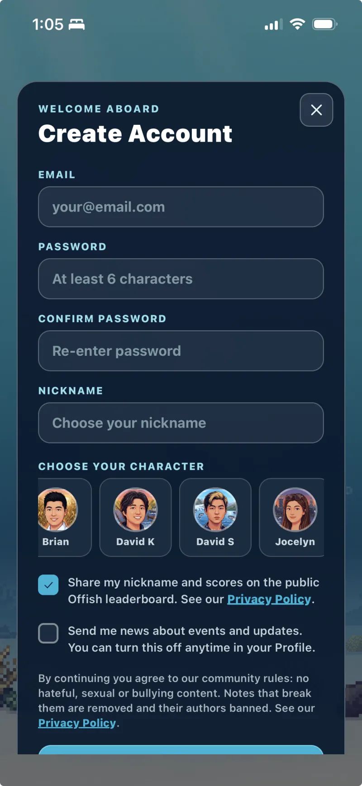
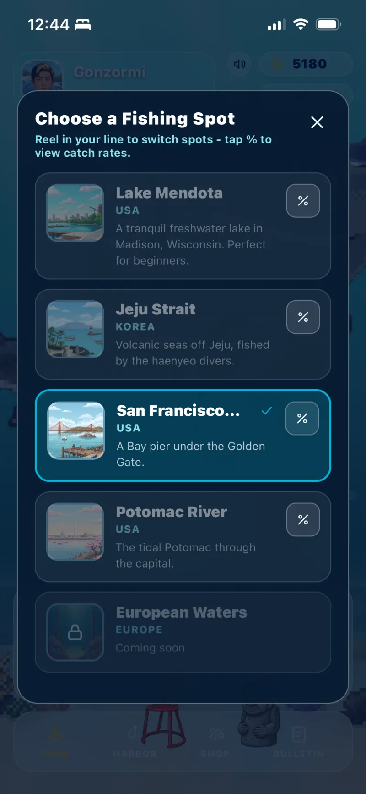
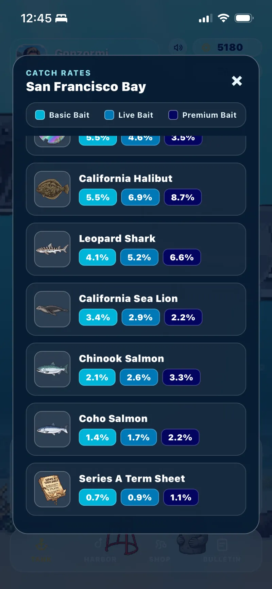
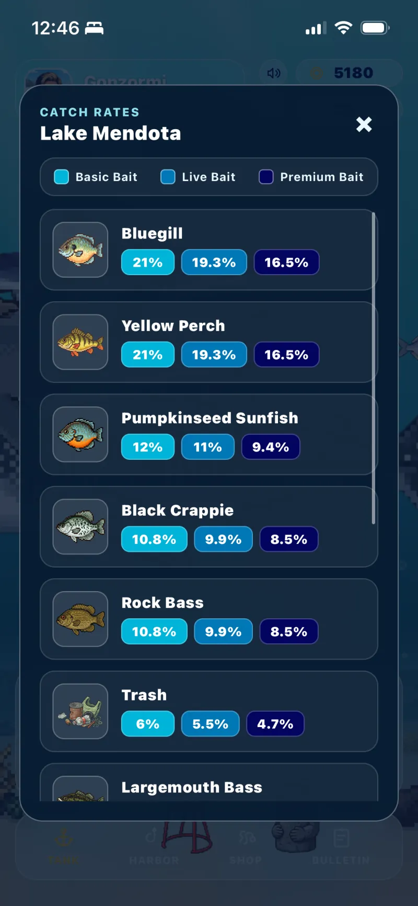
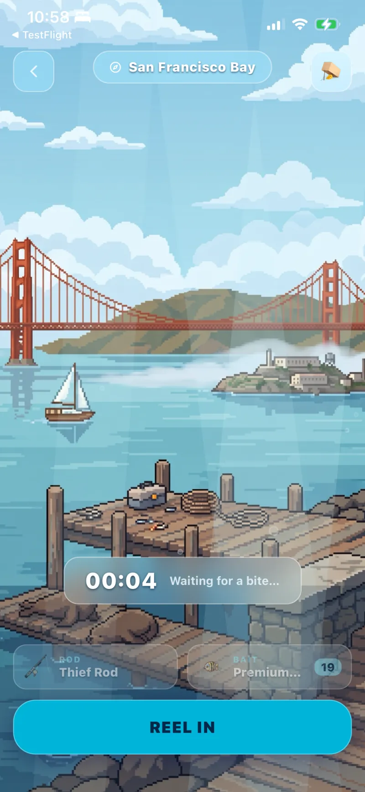
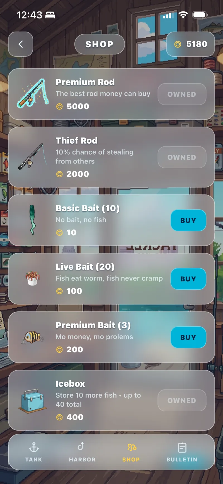
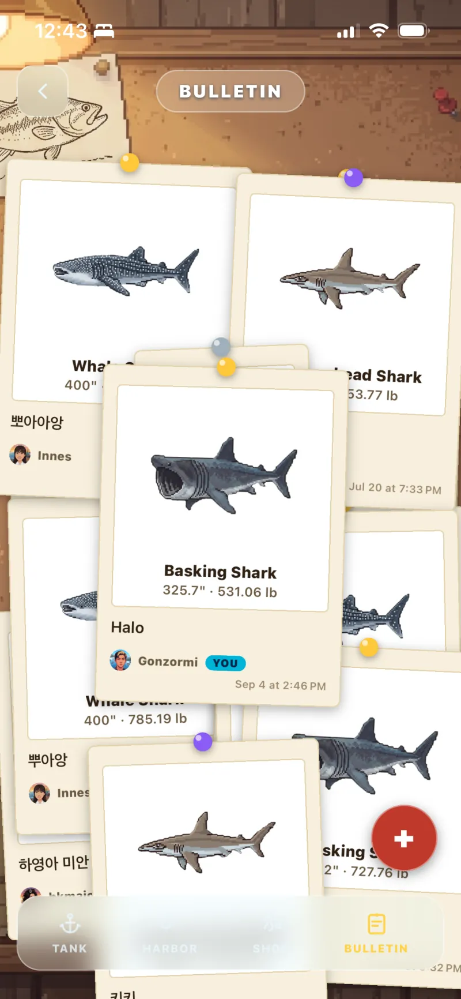
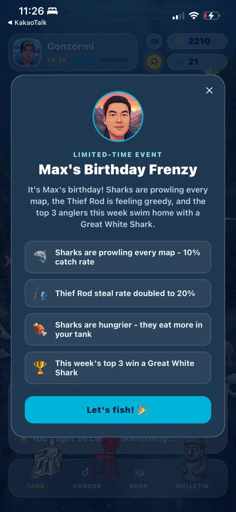
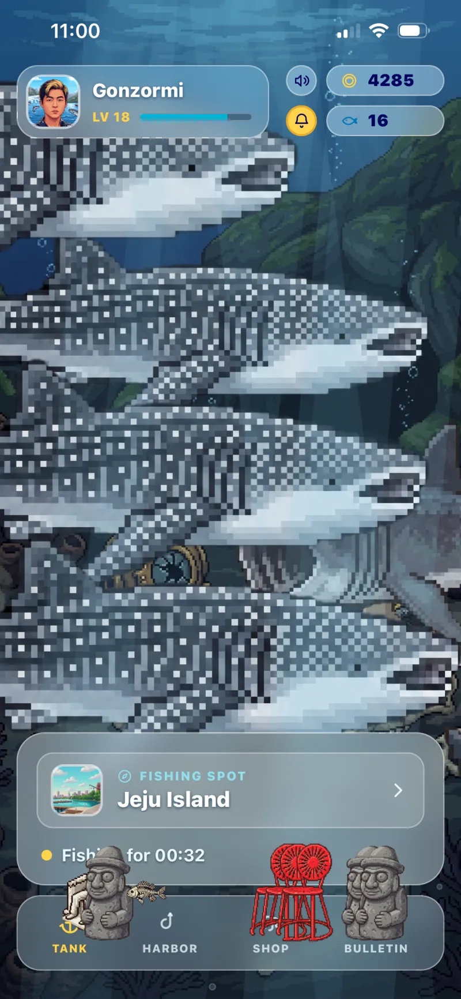
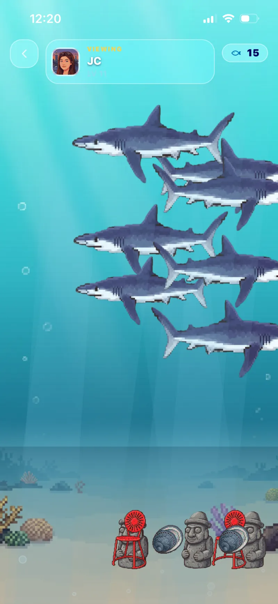

Offish: Fishing Experience for the Office
Overview
Offish is a guinea pig project I started to explore the world of app development. I wanted to build something that gives people access to something they love but don't always have time for, something they could be obsessed with but at the same time only open several times a day.
Fishing is something I enjoy: sometimes quick and rewarding, sometimes a whole lot of waiting. It can be enjoyed with friends on a boat, or by yourself on the shore with a can of beer.
It's also something I wanted my friends to enjoy, so I added cutesy elements to lure them in.
From the start, you choose to play as me or one of my friends.
You can fish Lake Mendota in Madison, the Jeju Strait, San Francisco Bay, or the Potomac in DC. They're all places where we've made a lot of memories. Each spot has its own catch rates and items native to the area.




Fish any of those spots right from your office. Try different rods, baits and items to change how you fish, then show off your catches on the bulletin.



On special occasions, I launch special events to add a fun twist to the experience.



Sit back, gear up and hook 'em all!